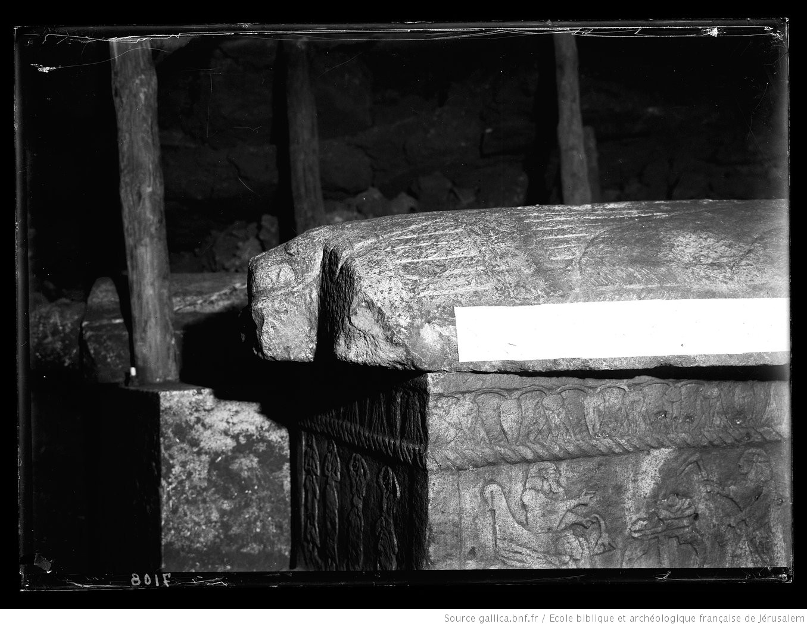

Ahiram Sarcophagus

- Find Name
- Ahiram Sarcophagus
- Description
- A limestone sarcophagus of Ahiram, a Phoenician king of Byblos (about 1000 BC), discovered in 1923 by Pierre Montet in Tomb V of the royal necropolis at Byblos, revealed by a landslide. Its 38-word Phoenician inscription (KAI 1), commissioned by his son Ittobaal, curses anyone who disturbs the coffin. It is now in the National Museum of Beirut.
- Historical Period
- Iron Age I; c. 1000 BC
- Evidence Class
- Contextual
- Interpretations
- The inscription is the earliest known example of the fully developed Phoenician alphabet (19 of 22 letters present), the script family from which Greek, Latin, Cyrillic, Hebrew, and Arabic alphabets descend. Caution: Ahiram is not attested in any other ancient source, and a suggested connection to the biblical King Hiram is only a scholarly suggestion; Ahiram must not be identified as Hiram, and no Hiram passage is linked here.
- Alternative Names
- Ahirom Sarcophagus; Sarcophagus of King Ahiram
- Biblical Significance
- It preserves the earliest fully developed Phoenician alphabet, the writing system from which the Hebrew script of the Old Testament descends.
- Artifact Date
- c. 1000 BC
- Current Location
- National Museum of Beirut, Lebanon
- Date Discovered
- 1923
- Discovery Location
- Byblos, Lebanon
- Timeline Era
- United Monarchy
Awaiting Review Not yet checked against scholarly sources. Treat its claims as provisional until this entry is reviewed. About verification
Sources: https://en.wikipedia.org/wiki/Ahiram_sarcophagus?oldid=1319725568
https://en.wikipedia.org/wiki/Phoenician_alphabet
https://en.wikipedia.org/wiki/Phoenician_alphabet
Last reviewed: not yet reviewed